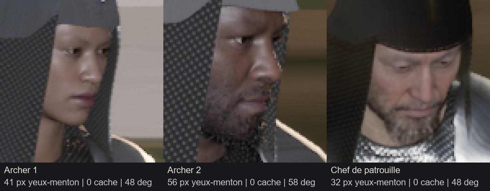
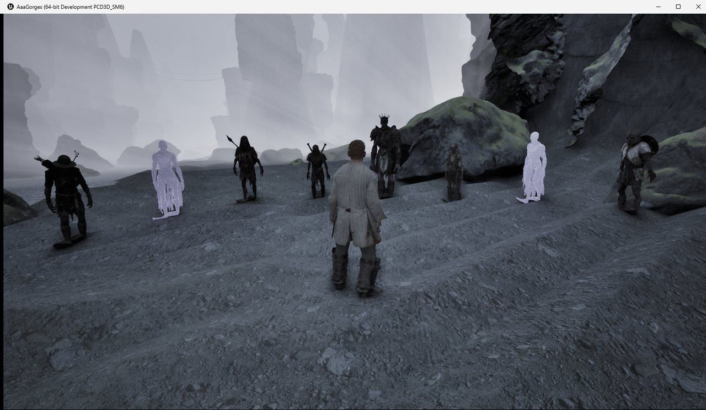

Projet AAA · suivi · jeudi 8 octobre 2026 · semaine du 6 au 12 octobre
Jour 3
Troisième journée de la semaine. Le directeur a choisi la suite avant de partir au travail : les MetaHumans des soldats de la patrouille dans Unreal, les défauts connus de trois bêtes en modèles 3D, et le report des décisions de la veille dans les documents.
Mise à jour : 10/10/2026 à 05:48
Résumé
6 validés
Quota : 25,6 % de la semaine utilisés au début de la journée (estimation du compteur), environ 17 % disponibles aujourd'hui.
Le travail du 7 octobre est enregistré (commit 0cadafed) : escalade, meneur, morts-vivants variés, œil du sanglier, page « Modèles 3D », décisions D-250 à D-252.
Décisions de l'après-midi (D-253) : le grand sort tue toute la horde et le réceptacle protège le héros jusqu'à la fin de la scène ; le lapin est gardé tel quel ; pour l'escalade, on s'accroche en sautant contre la paroi et on lâche par ○ / C. La nuit en autonomie se décidera plus tard.
Fin de journée (D-254) : pas de nuit pour l'instant ; le quota restant est réparti à parts égales sur les journées du 9 au 12 octobre (environ 12 % par jour) ; la caméra qui traverse la horde est gardée ; se raccrocher en l'air coûte 10 d'Endurance ; à zéro d'Endurance hors combat, le héros arrête seulement de courir.
Les files de travail
Chaque ticket a un exécutant et un vérificateur ; une correction est confiée à un agent neuf (D-231). Un seul agent à la fois dans Unreal.
Unreal
Le prototype jouable ; un seul agent à la fois dans le projet.
T-0157 · D-179 · D-248 (1) · D-250 (1)
Les soldats de la patrouille en MetaHumans
Trois MetaHumans différents (l'archer grand et mince, l'archer trapu, le chef de patrouille), avec leurs armures, à la place des modèles générés.
Validé
Lancé à 07:26, livré à 08:17, renvoyé en correction à 08:44 (visages illisibles, casque en béret, armure incomplète). Corrigé par un agent neuf de 08:44 à 10:46 (commit a63babc) : la caméra s'ouvre à hauteur de visage, un bassinet ajusté avec un camail de mailles remplace la calotte, épaulières et brassards repris, plus aucune flèche devant un camarade. Nouvelle vérification lancée à 10:46. Validé à 11:05 : visages lisibles, casque ajusté, armure complète, retour arrière vérifié, parcours vert. Petits restes : la marge du visage du chef est faible (sa garde à l'épée), le cimier doré ne se lit pas comme de l'or, une flèche frôle un casque en passant derrière.
T-0160 · D-234 (2) · D-252
La horde avec le meneur et les morts-vivants variés
Le meneur « champion » à la place du meneur provisoire, et les 4 morts-vivants variés mêlés aux 15 de la horde ; pieds, métal et images par seconde mesurés.
Validé
Lancé à 11:06, livré à 13:20 (commit dd4b64e) : le meneur « champion » et les 4 morts-vivants variés sont dans la horde ; pieds relevés après le reciblage d'Unreal ; 120 à 136 images par seconde avec 20 créatures ; préchargement des modèles ajouté (plus de gel de 0,9 s à la sortie de la horde). Un essai de la horde échoue 2 fois sur 5, comme avant ce ticket (le héros finit à 10 PV après l'essai du réceptacle) : ticket séparé à prévoir. Vérification lancée à 13:20. Validé à 13:37 : pieds remesurés par le vérificateur sur toutes les images, images par seconde suffisantes ; l'essai qui échoue 2 fois sur 5 vient bien d'avant (le héros à 10 PV meurt sous le coup d'une créature qui survit au grand sort) : une question au directeur, puis un ticket. Suite : tranché le 08/10 (D-253 (1)) : le grand sort tue toute la horde et le héros reste protégé jusqu'à la fin de la scène ; fait par T-0161 (série de la horde à 5 sur 5).
T-0161 · D-253
Fin de la horde, touches de l'escalade, fiabilité des essais
Le sort tue toute la horde et le héros reste protégé jusqu'à la fin ; les nouvelles touches de l'escalade ; les contrôles du ciel de nuit et du visage du chef rendus stables.
Validé
Lancé à 14:01, livré à 16:34 (commit 75674d5) : la série de la horde passe à 5 sur 5 (le sort tue toute la horde, le héros reste protégé jusqu'à la fin) ; on s'accroche en sautant contre la paroi et on lâche par ○ / C ; le contrôle du ciel de nuit et celui du visage du chef sont stables. Proposition à soumettre au directeur : la caméra traverse les créatures de la horde. Suite : la caméra qui traverse la horde est gardée, une créature entre la caméra et le héros pourra être rendue transparente plus tard (D-254 (2)) ; se raccrocher en l'air coûte 10 d'Endurance, dans les 6 premiers mètres de chute (D-254 (3)), fait par T-0164. Vérification lancée à 16:35, avec le parcours des 46 limites à rejouer. Validé à 17:13 : le vérificateur a relancé la série de la horde (5 sur 5), l'escalade avec les vraies touches et le refus aux limites. Restes notés : la caméra peut entrer dans une créature (effet de la caméra qui traverse la horde) ; se raccrocher en sautant reste gratuit, quelle que soit la hauteur de chute.
Demain : appliquer D-254 (raccrochage payant, pas d'étourdissement hors combat) ; puis l'arc des archers (D-248 (2)), la saison et la météo.
Modèles 3D
Les modèles du prototype, faits sur ce PC, sans Unreal.
T-0158 · D-235 (8)
Défauts connus : araignée, perdrix, lapin
Le moignon de l'araignée, la perdrix qui change de corps entre le sol et le vol, les pattes du lapin qui se recouvrent au saut.
Validé
Lancé à 07:26, livré à 08:57, renvoyé en correction à 09:48 (ailes de la perdrix au sol, traversées du lapin mal mesurées). Corrigé par un agent neuf de 09:49 à 10:47 : au sol, les ailes de la perdrix se replient sous la peau (posée, elle est identique à avant) ; pour le lapin, les plis et la peau étirée sont déclarés exactement, avec la piste d'un nouveau lapin pattes tendues. Nouvelle vérification lancée à 10:47. Validé à 11:17. Restent soumis au directeur : la peau étirée et les petits plis du lapin Suite : le lapin est gardé tel quel, ses défauts restent déclarés, à reprendre avec les vraies foulées (D-253 (2), le 08/10) ; les pattes de l'araignée ne se touchent plus (ticket d'animation T-0166, D-258 (3)) et sa pose de mort est gardée (D-259). (piste : un nouveau lapin généré pattes tendues, environ 1,5 %), les pattes de l'araignée qui se touchent (ticket d'animation).
Puis les oiseaux, les laies, les vraies foulées et les marches blessées (D-235).
Documents
Reporter les décisions du directeur dans Documents/.
T-0159 · D-250 · D-251 · D-252
Reporter D-250 à D-252
Les MetaHumans après l'escalade, le sanglier (crête et œil), le meneur « champion » à la peau mauve, les valeurs de départ de l'escalade, les défauts acceptés.
Validé
Lancé à 07:26, livré à 07:31, renvoyé en correction vers 07:35 : les trois décisions sont bien reportées, mais quatre précisions manquaient (quel « déserteur », à quoi la teinte du meneur est comparée, une touche des maquettes en double, la crête du sanglier dans les groupes d'ennemis). Corrigé par un agent neuf de 07:36 à 07:38 ; nouvelle vérification lancée à 07:39. Validé à 07:41. Reste une ligne des maquettes à reprendre plus tard (à zéro d'Endurance : étourdi en combat, chute sur la paroi).
T-0162 · D-253
Reporter D-253
La fin de la horde, le lapin, les touches de l'escalade, et la ligne des maquettes sur l'Endurance à zéro.
Validé
Lancé à 14:01, livré à 14:06 : D-253 reportée dans 7 fichiers, et la ligne des maquettes sur l'Endurance à zéro corrigée. Le Chef a fait compléter quatre points avant la vérification (se raccrocher en l'air par le même geste, en proposition ; la horde « tuée par le grand sort » ; le sprint à zéro ; la horde de 20 dans le plan de la zone). Compléments faits ; vérification lancée à 14:08. Renvoyé en correction à 14:12 pour une ligne des maquettes (l'Endurance à zéro hors combat), corrigé par un agent neuf et validé à 14:14 : Documents/ est aligné jusqu'à D-253.
Modèles 3D du jour
Ce qui a été livré ou validé aujourd'hui.
Les soldats de la patrouille en MetaHumans
Validé
T-0157 · D-179 · D-250 (1)

Les trois visages tels qu'on les voit dans le plan de la patrouille, sous le bassinet et le camail de mailles.
L'archer grand et mince (1,90 m), l'archer trapu et barbu (1,70 m) et le chef de patrouille au bouc grisonnant (1,81 m), chacun différent des autres humains du jeu. Ils portent un bassinet ajusté avec un camail de mailles, les épaulières et les brassards de l'armure de l'Ordre.
Le moignon est aplati sur le flanc ; le reste du modèle est identique à chaque image des 7 animations. Point réglé (vérifié), en attendant la validation du ticket. Suite : T-0158 validé à 11:17.
Avant et après, de profil et par-dessous, au saut, à la fuite et à la mort.
Les pattes ne se recouvrent plus au saut, à la fuite ni à la mort. En échange, la peau de l'intérieur des cuisses s'étire davantage (bande claire de profil).
La horde avec son meneur et ses morts-vivants variés
Validé
T-0160 · D-234 (2) · D-252

Dans le jeu : le meneur couronné au centre, l'archer, le déserteur à la lance, le sergent aux deux épées, le soldat au bouclier, et les esprits.
La horde n'est plus faite de clones : le meneur « champion » la mène, et les morts-vivants mêlent l'original et les quatre variantes.
Sur le PC : E:/aaa-proto/unreal-v2/mesures/t0160/vitrine/
Journal
Début de la journée : choix du directeur avant son départ (MetaHumans, défauts connus, pas de décision sur la nuit avant ce soir).
Commit du travail du 7 octobre (0cadafed).
Lancement de T-0157 (MetaHumans des soldats), T-0158 (défauts connus des bêtes) et T-0159 (report de D-250 à D-252).
T-0159 livré (D-250 à D-252 dans 9 fichiers) ; vérification lancée.
T-0159 à corriger : quatre précisions de texte.
Correction 1 de T-0159 confiée à un agent neuf.
Correction 1 de T-0159 livrée ; nouvelle vérification lancée.
T-0159 validé : Documents/ est aligné jusqu'à D-252.
T-0157 livré (les soldats de la patrouille en MetaHumans) ; vérification lancée.
T-0157 à corriger : visages illisibles dans le plan, casque à refaire, armure incomplète.
Correction 1 de T-0157 confiée à un agent neuf.
T-0158 livré (défauts de l'araignée, de la perdrix et du lapin) ; vérification lancée.
T-0158 à corriger : morceaux d'aile de la perdrix au sol, traversées du lapin mal mesurées ; l'araignée est réglée.
Correction 1 de T-0158 confiée à un agent neuf.
Correction 1 de T-0157 livrée (visages lisibles, nouveau casque, armure complète) ; nouvelle vérification lancée.
Correction 1 de T-0158 livrée ; nouvelle vérification lancée.
T-0157 validé : les soldats de la patrouille sont des MetaHumans.
Lancement de T-0160 : le meneur et les morts-vivants variés dans la horde.
T-0158 validé : l'araignée sans moignon, la perdrix d'un seul corps, le lapin aux pattes séparées.
T-0160 livré (la horde avec le meneur et les morts-vivants variés) ; vérification lancée.
T-0160 validé : la horde a son meneur et ses morts-vivants variés.
D-253 : le grand sort tue toute la horde et le réceptacle protège jusqu'à la fin ; lapin gardé ; nouvelles touches de l'escalade (sauter contre la paroi, lâcher par ○ / C).
Lancement de T-0161 (fin de la horde, touches, fiabilité des essais) et de T-0162 (report de D-253).
T-0162 livré ; quatre compléments demandés à son agent avant la vérification. T-0161 reçoit la précision pour se raccrocher en l'air.
Compléments de T-0162 faits ; vérification lancée.
T-0162 validé : Documents/ est aligné jusqu'à D-253.
T-0161 livré (fin de la horde, touches de l'escalade, essais fiables) ; vérification lancée.
T-0161 validé : la horde se termine toujours bien, les nouvelles touches de l'escalade marchent, les essais sont stables.
D-254 : quota réparti sur les journées du 9 au 12 octobre, sans nuit ; caméra gardée ; raccrochage en l'air au prix de 10 d'Endurance ; plus d'étourdissement hors combat. Fin du travail du jour.
Questions pour le directeur
Questions en attente du directeur.
2 questions attendent leur réponse. Personne ne les tranche à la place du directeur.
Échanges
Surnoms de l'entité : quelle liste ? (à choisir à deux, dans le fil « Échanges »)
T-0153
Le meneur : garder la démarche lourde proposée ?
Réponse du directeur : Gardée, le 08/10 au soir (D-255 (2)).
T-0149
Le sanglier : ses franges éclaircies sont-elles à garder ?
Réponse du directeur : Gardées, le 08/10 au soir (D-255 (3)).
Nuit
Une nuit en autonomie ce soir ? (à décider ce soir, selon le budget restant)
Réponse du directeur : Pas de nuit pour l'instant : le quota restant est divisé à parts égales sur les journées du 9 au 12 octobre, environ 12 % par jour (D-254 (1)).
T-0159
Escalade : la touche □ / X sert déjà à « Interagir » dans les maquettes. Garder le doublon (prendre la paroi en interagissant avec elle), ou choisir une autre touche ?
Réponse du directeur : Autre touche : on s'accroche en sautant contre la paroi, on lâche par ○ / C (D-253 (3)).
T-0159
Une chute d'escalade peut-elle laisser une blessure durable (Fracture Séquellaire, comme la chute de falaise du système de vieillissement) ? Et la bible dit encore qu'aucune image de bête n'existe : la mettre à jour ?
T-0158
Le lapin : sa peau s'étire à l'intérieur des cuisses au saut (visible de près, à peine à 2 m). Le garder ainsi, ou générer un nouveau lapin pattes tendues (environ 1,5 %) ? Et les pattes de l'araignée qui se touchent : un ticket d'animation ?
Réponse du directeur : Lapin gardé tel quel, défauts déclarés (D-253 (2)) ; araignée : ticket d'animation fait le 09/10 (D-258 (3), T-0166), ses pattes ne se touchent plus ; pose de mort gardée (D-259).
T-0160
La horde après le grand sort : une créature qui survit peut achever le héros.
Réponse du directeur : Le sort tue toute la horde, et le réceptacle protège le héros jusqu'à la fin de la scène (D-253 (1)).
T-0161, T-0162
Escalade : les nouvelles touches sont-elles réglables par le joueur ? Et se raccrocher en l'air après un lâcher par le même geste (sauter vers la paroi, dans les 6 premiers mètres), comme le propose le Chef ?
Réponse du directeur : Se raccrocher en l'air par le même saut, dans les 6 premiers mètres, au prix de 10 d'Endurance (D-254 (3)). Touches réglables par le joueur dans les options, comme les autres commandes (D-255 (1), le 08/10 au soir).
T-0162
À zéro d'Endurance hors combat (en courant), le héros est étourdi 1,6 s dans le prototype : le garder, ou seulement arrêter le sprint ? (point 12 du § 7 des maquettes)
Réponse du directeur : Seulement arrêter le sprint ; l'étourdissement reste réservé au combat (D-254 (4)).
T-0161
La caméra traverse maintenant les créatures de la horde (sinon une créature dans le dos du héros la collait contre lui) : à garder ?